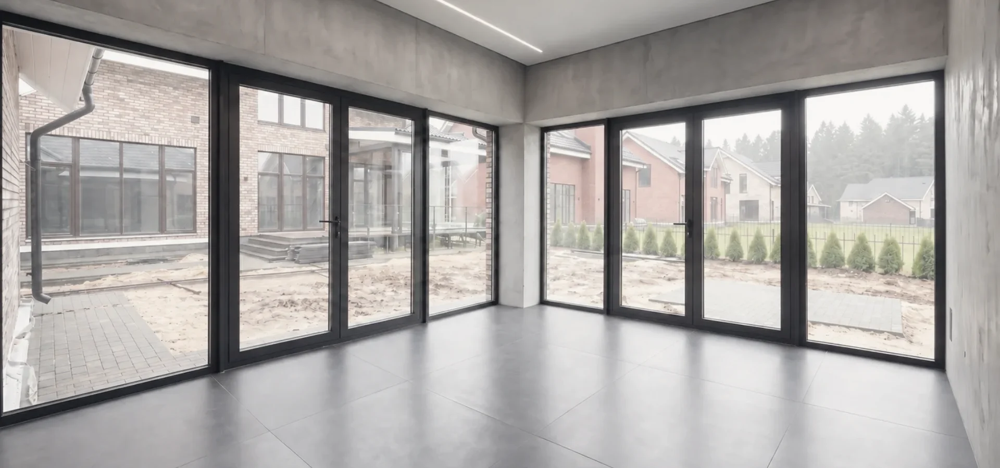
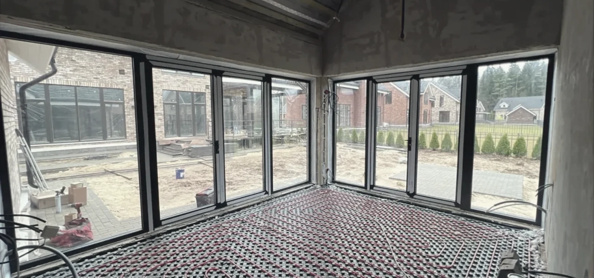

Стираем границу между домом и пространством
Панорамные алюминиевые конструкции для современной архитектуры: готовые HS-порталы и индивидуальное остекление домов, террас и фасадов.
Готовые двери
Раздвижные двери с ценой




Как мы работаем
От проёма до готовой двери
- 01Замер
Приезжаем в удобный день, проверяем проём, пол и основание.
Бесплатно - 02Проект и договор
Подбираем систему и раскладку створок, фиксируем цену и срок.
Цена в договоре - 03Производство
Собираем дверь на своём производстве и проверяем механизмы.
30–60 дней - 04Монтаж
Устанавливаем, герметизируем, регулируем и сдаём в работе.
Гарантия 5 лет
Калькулятор
Соберите портал и узнайте стоимость
Сначала покажем подходящую конструкцию и ориентировочную цену. Контакты понадобятся только после результата — если захотите получить точную смету.
Выберите систему и укажите примерные размеры
Покажем подходящую конфигурацию и ориентировочную стоимость до заявки. Точный замер на этом этапе не нужен.
Можно указать примерный размер — точные параметры инженер подтвердит на замере.
Выберите стеклопакет и комплектацию
Укажите тепловой контур, тип стекла, цвет профиля и дополнительные опции. Эти параметры влияют на эксплуатацию и итоговую стоимость портала.
Расчёт готов
Предварительный расчёт
Проверьте проект и ориентировочную стоимость. Если всё подходит — оставьте контакты здесь же, и инженер подготовит точную смету.
Оставьте имя и телефон — инженер получит все выбранные параметры, проверит проект и вернётся с точной стоимостью. Повторно вводить ничего не нужно.
Вопросы и ответы
Коротко о главном
Сколько стоит раздвижная дверь на террасу?
Готовые двери шириной 3,0–8,0 м (2, 3 и 4 створки, высота 2300 или 2400 мм) продаются с ценой — она указана в каталоге. Для другого размера введите ширину и высоту в калькуляторе: цена появится сразу.
Как быстро изготовите?
От 30 до 60 дней после подтверждения заказа — зависит от размера, стекла и цвета. Точную дату доставки и монтажа согласует менеджер.
Сколько стоят доставка и монтаж?
Около 12 % от стоимости конструкций, минимум 45 000 ₽ — по Москве и МО до 50 км от МКАД. Замер бесплатный, итоговая сумма — в договоре.
Какая гарантия?
На монтаж — 5 лет. После установки регулируем механизмы и сдаём дверь в работе.
Ваш проект
Начнём с проёма
Оставьте примерные размеры и коротко опишите задачу. План дома, проект или фото можно прикрепить прямо к заявке — подберём систему и подготовим предварительную смету.
Проекты
Пространства, где стекло исчезает
Не просто примеры остекления, а сценарии: панорамный фасад, свет во всю высоту и широкий выход на террасу.

Дом с панорамным фасадом
Единый контур остекления с крупными светопрозрачными плоскостями и выходом на участок.

Свет во всю высоту
Окна в пол с минимальным визуальным шумом и акцентом на вид из интерьера.

Выход на террасу
Тёплый подъёмно-раздвижной портал для ежедневного прохода из жилой зоны.